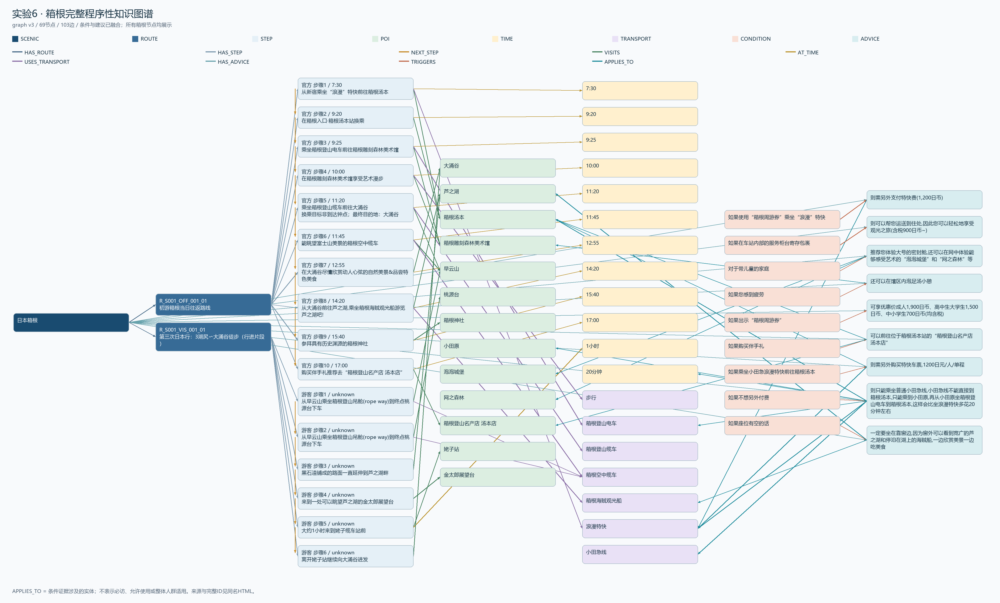

所有节点、边及来源；浏览器查找可搜索ID。APPLIES_TO表示证据相关。

| 节点 | 内容与来源 |
|---|---|
| POI / N_ENTITY_S001_POI_002 | 大涌谷['S001_OFF_001', 'S001_VIS_001', 'S001_VIS_002', 'S001_VIS_003', 'S001_VIS_004', 'S001_VIS_005'] |
| POI / N_ENTITY_S001_POI_003 | 芦之湖['S001_OFF_001', 'S001_VIS_001', 'S001_VIS_002', 'S001_VIS_003', 'S001_VIS_004', 'S001_VIS_005'] |
| POI / N_ENTITY_S001_POI_005 | 箱根汤本['S001_OFF_001', 'S001_VIS_003', 'S001_VIS_005'] |
| POI / N_ENTITY_S001_POI_007 | 箱根雕刻森林美术馆['S001_OFF_001'] |
| POI / N_ENTITY_S001_POI_009 | 早云山['S001_OFF_001', 'S001_VIS_001', 'S001_VIS_005'] |
| POI / N_ENTITY_S001_POI_010 | 桃源台['S001_OFF_001', 'S001_VIS_001', 'S001_VIS_003', 'S001_VIS_005'] |
| POI / N_ENTITY_S001_POI_014 | 箱根神社['S001_OFF_001', 'S001_VIS_005'] |
| POI / N_ENTITY_S001_POI_016 | 小田原['S001_OFF_001', 'S001_VIS_003', 'S001_VIS_005'] |
| POI / N_ENTITY_S001_POI_020 | 泡泡城堡['S001_OFF_001'] |
| POI / N_ENTITY_S001_POI_021 | 网之森林['S001_OFF_001'] |
| POI / N_ENTITY_S001_POI_025 | 箱根登山名产店 汤本店['S001_OFF_001'] |
| POI / N_ENTITY_S001_POI_026 | 姥子站['S001_VIS_001'] |
| POI / N_ENTITY_S001_POI_027 | 金太郎展望台['S001_VIS_001'] |
| TIME / N_ENTITY_S001_TIME_003 | 7:30['S001_OFF_001'] |
| TIME / N_ENTITY_S001_TIME_004 | 9:20['S001_OFF_001'] |
| TIME / N_ENTITY_S001_TIME_005 | 9:25['S001_OFF_001'] |
| TIME / N_ENTITY_S001_TIME_006 | 10:00['S001_OFF_001'] |
| TIME / N_ENTITY_S001_TIME_007 | 11:20['S001_OFF_001'] |
| TIME / N_ENTITY_S001_TIME_008 | 11:45['S001_OFF_001'] |
| TIME / N_ENTITY_S001_TIME_011 | 12:55['S001_OFF_001'] |
| TIME / N_ENTITY_S001_TIME_012 | 14:20['S001_OFF_001'] |
| TIME / N_ENTITY_S001_TIME_013 | 15:40['S001_OFF_001'] |
| TIME / N_ENTITY_S001_TIME_016 | 17:00['S001_OFF_001'] |
| TIME / N_ENTITY_S001_TIME_021 | 1小时['S001_VIS_001'] |
| TIME / N_ENTITY_S001_TIME_030 | 20分钟['S001_VIS_005'] |
| TRANSPORT / N_ENTITY_S001_TRANSPORT_001 | 步行['S001_OFF_001', 'S001_VIS_001', 'S001_VIS_004'] |
| TRANSPORT / N_ENTITY_S001_TRANSPORT_010 | 箱根登山电车['S001_OFF_001', 'S001_VIS_003', 'S001_VIS_005'] |
| TRANSPORT / N_ENTITY_S001_TRANSPORT_011 | 箱根登山缆车['S001_OFF_001', 'S001_VIS_005'] |
| TRANSPORT / N_ENTITY_S001_TRANSPORT_012 | 箱根空中缆车['S001_OFF_001', 'S001_VIS_001', 'S001_VIS_005'] |
| TRANSPORT / N_ENTITY_S001_TRANSPORT_014 | 箱根海贼观光船['S001_OFF_001', 'S001_VIS_002', 'S001_VIS_003', 'S001_VIS_004', 'S001_VIS_005'] |
| TRANSPORT / N_ENTITY_S001_TRANSPORT_015 | 浪漫特快['S001_OFF_001', 'S001_VIS_005'] |
| TRANSPORT / N_ENTITY_S001_TRANSPORT_016 | 小田急线['S001_VIS_003', 'S001_VIS_005'] |
| SCENIC / N_SCENIC_S001 | 日本箱根[] |
| ROUTE / N_ROUTE_R_S001_OFF_001_01 | 初游箱根当日往返路线['S001_OFF_001'] |
| STEP / N_STEP_R_S001_OFF_001_01_001 | 从新宿乘坐“浪漫”特快前往箱根汤本['S001_OFF_001'] |
| STEP / N_STEP_R_S001_OFF_001_01_002 | 在箱根入口·箱根汤本站换乘['S001_OFF_001'] |
| STEP / N_STEP_R_S001_OFF_001_01_003 | 乘坐箱根登山电车前往箱根雕刻森林美术馆['S001_OFF_001'] |
| STEP / N_STEP_R_S001_OFF_001_01_004 | 在箱根雕刻森林美术馆享受艺术漫步['S001_OFF_001'] |
| STEP / N_STEP_R_S001_OFF_001_01_005 | 乘坐箱根登山缆车前往大涌谷['S001_OFF_001'] |
| STEP / N_STEP_R_S001_OFF_001_01_006 | 能眺望富士山美景的箱根空中缆车['S001_OFF_001'] |
| STEP / N_STEP_R_S001_OFF_001_01_007 | 在大涌谷尽情欣赏动人心弦的自然美景&品尝特色美食['S001_OFF_001'] |
| STEP / N_STEP_R_S001_OFF_001_01_008 | 从大涌谷前往芦之湖,乘坐箱根海贼观光船游览芦之湖吧!['S001_OFF_001'] |
| STEP / N_STEP_R_S001_OFF_001_01_009 | 参拜具有历史渊源的箱根神社['S001_OFF_001'] |
| STEP / N_STEP_R_S001_OFF_001_01_010 | 购买伴手礼推荐去“箱根登山名产店 汤本店”['S001_OFF_001'] |
| ROUTE / N_ROUTE_R_S001_VIS_001_01 | 第三次日本行：3湖尻〜大涌谷徒步（行进片段）['S001_VIS_001'] |
| STEP / N_STEP_R_S001_VIS_001_01_001 | 从早云山乘坐箱根登山吊舱(rope way)到终点桃源台下车['S001_VIS_001'] |
| STEP / N_STEP_R_S001_VIS_001_01_002 | 从早云山乘坐箱根登山吊舱(rope way)到终点桃源台下车['S001_VIS_001'] |
| STEP / N_STEP_R_S001_VIS_001_01_003 | 黑石渣铺成的路面一直延伸到芦之湖畔['S001_VIS_001'] |
| STEP / N_STEP_R_S001_VIS_001_01_004 | 来到一处可以眺望芦之湖的金太郎展望台['S001_VIS_001'] |
| STEP / N_STEP_R_S001_VIS_001_01_005 | 大约1小时来到姥子缆车站前['S001_VIS_001'] |
| STEP / N_STEP_R_S001_VIS_001_01_006 | 离开姥子站继续向大涌谷进发['S001_VIS_001'] |
| CONDITION / N_CONDITION_A_S001_OFF_001_255828790194615 | 如果使用“箱根周游券”乘坐“浪漫”特快['S001_OFF_001'] |
| ADVICE / N_ADVICE_A_S001_OFF_001_255828790194615 | 则需另外支付特快费(1,200日币)['S001_OFF_001'] |
| CONDITION / N_CONDITION_A_S001_OFF_001_171123485310695 | 如果在车站内部的服务柜台寄存包裹['S001_OFF_001'] |
| ADVICE / N_ADVICE_A_S001_OFF_001_171123485310695 | 则可以帮您运送到住处,因此您可以轻松地享受观光之旅(含税900日币~)['S001_OFF_001'] |
| CONDITION / N_CONDITION_A_S001_OFF_001_247169266140315 | 对于带儿童的家庭['S001_OFF_001'] |
| ADVICE / N_ADVICE_A_S001_OFF_001_247169266140315 | 推荐您体验大号的密封舱,还可以在网中体验能够感受艺术的“泡泡城堡”和“网之森林”等['S001_OFF_001'] |
| CONDITION / N_CONDITION_A_S001_OFF_001_177547618944147 | 如果您感到疲劳['S001_OFF_001'] |
| ADVICE / N_ADVICE_A_S001_OFF_001_177547618944147 | 还可以在馆区内泡足汤小憩['S001_OFF_001'] |
| CONDITION / N_CONDITION_A_S001_OFF_001_147046239503370 | 如果出示“箱根周游券”['S001_OFF_001'] |
| ADVICE / N_ADVICE_A_S001_OFF_001_147046239503370 | 可享优惠价成人1,900日币、高中生大学生1,500日币、中小学生700日币(均含税)['S001_OFF_001'] |
| CONDITION / N_CONDITION_A_S001_OFF_001_250646070388022 | 如果购买伴手礼['S001_OFF_001'] |
| ADVICE / N_ADVICE_A_S001_OFF_001_250646070388022 | 可以前往位于箱根汤本站的“箱根登山名产店 汤本店”['S001_OFF_001'] |
| CONDITION / N_CONDITION_A_S001_VIS_005_134550840182935 | 如果乘坐小田急浪漫特快前往箱根汤本['S001_VIS_005'] |
| ADVICE / N_ADVICE_A_S001_VIS_005_134550840182935 | 则需另外购买特快车票,1200日元/人/单程['S001_VIS_005'] |
| CONDITION / N_CONDITION_A_S001_VIS_005_228267617104810 | 如果不想另外付费['S001_VIS_005'] |
| ADVICE / N_ADVICE_A_S001_VIS_005_228267617104810 | 则只能乘坐普通小田急线,小田急线不能直接到箱根汤本,只能乘到小田原,再从小田原坐箱根登山电车到箱根汤本,这样会比坐浪漫特快多花20分钟左右['S001_VIS_005'] |
| CONDITION / N_CONDITION_A_S001_VIS_005_117040616929219 | 如果座位有空的话['S001_VIS_005'] |
| ADVICE / N_ADVICE_A_S001_VIS_005_117040616929219 | 一定要坐在靠窗边,因为窗外可以看到宽广的芦之湖和停泊在湖上的海贼船,一边欣赏美景一边吃美食['S001_VIS_005'] |